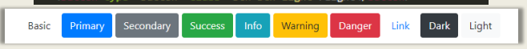
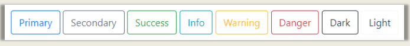
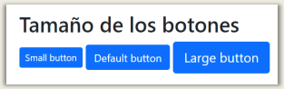
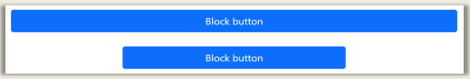
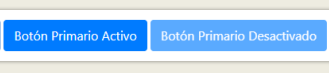
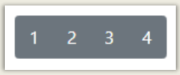
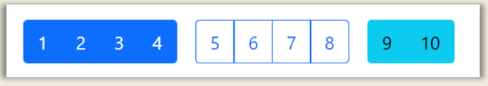
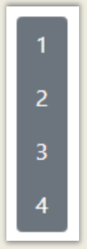
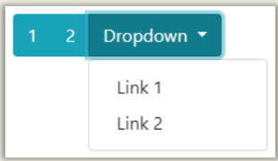
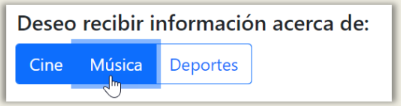

Botones
| Clases | Descripción | Ejemplo |
|---|---|---|
class="btn btn-primary" |
Colores para diferentes tipos de botones. |  |
class="btn btn-outline-primary" |
Colores para diferentes tipos de botones, al pasar el ratón cambia de color. |  |
class="btn btn-(sm/lg)" |
Tamaños de los botones. |  |
class="d-grid" |
Para que el botón ocupe todo el ancho del contenedor. |  |
class="disabled" |
Para configurar el botón para que no podamos hacer click. |  |
<div class="row">
<div class="col">
<div class="btn-group">
<button type="button" class="btn btn-secondary">1</button>
<button type="button" class="btn btn-secondary">2</button>
<button type="button" class="btn btn-secondary">3</button>
<button type="button" class="btn btn-secondary">4</button>
</div>
</div>
</div>
|
Grupo de botones en una línea. |  |
<div class="row">
<div class="col">
<div class="btn-toolbar">
<div class="btn-group me-3">
<button type="button" class="btn btn-primary">1</button>
<button type="button" class="btn btn-primary">2</button>
<button type="button" class="btn btn-primary">3</button>
<button type="button" class="btn btn-primary">4</button>
</div>
<div class="btn-group me-3">
<button type="button" class="btn btn-outline-primary">5</button>
<button type="button" class="btn btn-outline-primary">6</button>
<button type="button" class="btn btn-outline-primary">7</button>
<button type="button" class="btn btn-outline-primary">8</button>
</div>
<div class="btn-group">
<button type="button" class="btn btn-info">9</button>
<button type="button" class="btn btn-info">10</button>
</div>
</div>
</div>
</div>
|
La barra de botones nos permite combinar grupos de botones para crear componentes más avanzados. También podemos añadir en cada grupo de botones las clases btn-group-(sm/lg), para modificar su tamaño. |  |
<div class="btn-group-vertical"></div>
|
Grupo de botones en vertical. |  |
<div class="row">
<div class="col">
<div class="btn-group">
<button type="button" class="btn btn-info">1</button>
<button type="button" class="btn btn-info">2</button>
<div class="btn-group">
<button type="button" class="btn btn-info dropdown-toggle" data-bs-toggle="dropdown">
Dropdown
</button>
<ul class="dropdown-menu">
<li><a class="dropdown-item" href="#">Link 1</a></li>
<li><a class="dropdown-item" href="#">Link 2</a></li>
</ul>
</div>
</div>
</div>
</div>
|
También es posible añadir desplegables a los grupos de botones. |  |
<div class="row">
<div class="col">
<h5>Deseo recibir información acerca de:</h5>
<div class="btn-group">
<input type="checkbox" class="btn-check" id="cine" checked>
<label class="btn btn-outline-primary" for="cine">Cine</label>
<input type="checkbox" class="btn-check" id="music">
<label class="btn btn-outline-primary" for="music">Música</label>
<input type="checkbox" class="btn-check" id="sports">
<label class="btn btn-outline-primary" for="sports">Deportes</label>
</div>
</div>
</div>
|
Podemos añadir comportamiento tipo checkbox a un grupo de botones, para que al pulsarlos se queden marcados. También podemos cambiar esto por un comportamiento de radiobutton, camiando el type="checkbox" por type="radio". |
 |